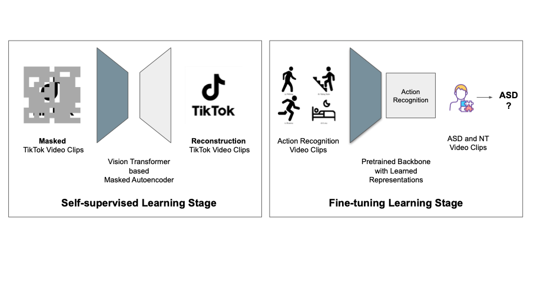

Autism Spectrum Disorder (ASD) affects approximately 1 in 36 children in the United States, underscoring the urgent need for accessible early screening solutions. Current clinical assessments are time-intensive, requiring detailed observations and professional oversight. Existing AI models often depend on lab-collected data or intensive annotations like eye tracking or pose estimation — limiting scalability.
The development of this ASD screening system began with a careful preprocessing pipeline to clean and curate a dataset of short video clips featuring children in natural environments. Unlike traditional diagnostic datasets collected in clinical settings, the raw videos in our collection came from real-world gameplay recordings where the presence of human subjects and interaction quality varied significantly. The first step involved removing non-human frames and low-quality footage using automated filters. We applied a human detection heuristic to eliminate videos without visible human presence, then used PySceneDetect to segment videos into semantically distinct scenes. This allowed us to better isolate consistent behaviors within shorter clips.
Following automated pruning, a manual review phase was conducted. Human annotators labeled clips as “usable” or “unusable” based on whether they displayed relevant social or interactive behavior. This stage was crucial to ensure the final dataset was behaviorally informative while still retaining the natural, unstructured qualities of real-life video. The goal was not to enforce rigid annotation schemas, but to create a dataset that reflected observable behavior patterns without requiring clinical tools like gaze tracking, pose estimation, or structured questionnaires.
Once the dataset was curated, we fed the processed clips into our training pipeline. Each clip was assigned a label based on the child’s diagnosis (ASD or NT), and grouped accordingly for gender-balanced training and testing splits. By limiting each child to a maximum of three clips, we ensured no single participant dominated the training distribution. This process made the final model more robust and generalizable — capable of identifying behavioral differences using only unstructured, short video data. Our system was trained using a vision transformer foundation model and evaluated on multiple metrics across 20 stratified Monte Carlo cross-validation splits, with consistent child-level coverage enforced across all runs.
We implemented a custom Monte Carlo split generation pipeline with forced gender-balanced test sets per split:
Each model was evaluated using:
üéØ All Splits Summary:
This project directly reflects my research focus: